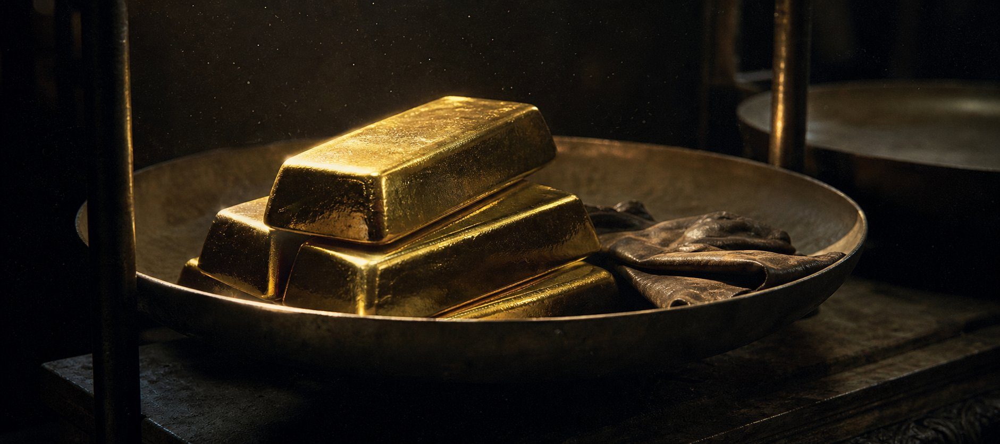

1. Les règles de la valeur
| Règle | Formulation | Pourquoi |
|---|---|---|
| La règle du slot | Viser 5 000 Koen par case d'inventaire | Un objet 1×1 à 10 000 K vaut plus qu'un 4×1 à 20 000 K : les slots sont la vraie monnaie |
| La règle du barter | Ne take que le barter à 8 000 K+ par slot | Ruban adhésif (800), allumettes (400), vis (600) : remplissage de slots pour rien |
| La règle du kit | Max 20 % de votre stash dans une sortie | 500 K de banque → 100 K max de kit ; sinon une mort ruine votre économie |
| La règle de vente | Marché > Contact | Le marché paie 20 à 30 % de plus sur les clés, l'électronique et le violet/or ; mais sous 4 000 K, vendez au contact |
2. Les red drops de la Saison 7
| Objet | Catégorie | Valeur (Koen) | Où l'obtenir |
|---|---|---|---|
| Elysium | Objet de valeur | ≈ 4 500 000 | Zones infectées — garanti en fin de série de missions zombies |
| Carte graphique | Électronique | ≈ 3 200 000 | Red Tier électronique classique, toujours au sommet |
| Laptop MRID | Électronique | ≈ 2 800 000 | Luxury Gift Box MRID, boîtes à mystery cargo, butin Kamona Investigation |
| Northern Stars | Objet de valeur | ≈ 2 200 000 | Collectible rouge S7 |
| Luth à double manche | Objet de valeur | ≈ 1 800 000 | Joue une mélodie en raid |
| Flûte de jade émeraude | Objet de valeur | ≈ 1 600 000 | Joue une mélodie en raid |
| Circuit militaire | Électronique | ≈ 1 500 000 | Red Tier électronique |
| Lingot d'or | Objet de valeur | ≈ 1 200 000 | Coffres très rares, boss |
| Chaotic Matter | Red drop | — | Sur toutes les cartes en S7 (il était exclusif à Distorted Valley, carte retirée cette saison) |
| Lunar Soil Sample | 2×2 | ≈ 780 000 | Coffres sur toutes les cartes, jusqu'au 9 novembre 2026 — aussi récompensé par l'événement Fame and Fortune |
| Document Secret | 1×2, 0,11 kg | ≈ 16 000 000 – 17 000 000 réalisables | Affiché ≈ 23,9 M mais vendu ~16–17 M au contact |
Le piège du Document Secret
La valeur affichée (≈ 23,9 M) et la valeur encaissée (≈ 16–17 M) ne sont pas la même chose : les Contacts ne paient jamais le prix affiché. Et les rapports de la communauté sont rares : un joueur a trouvé son premier après 2 200 heures de jeu, un autre en a cinq après 1 700 heures et zéro. C'est le loot le plus rare du jeu.
Catalogue interactif — tous les objets suivis
Tri automatique par rareté puis par valeur. Les « Nouveau » sont les ajouts de la Saison 7.
3. Les red drops à durée limitée
| Objet | Période | Comment |
|---|---|---|
| Stallion Wave Chaser | 27 août → 30 septembre 2026 | Chance dans un coffre sur n'importe quelle carte |
| Fading Dawn | 29 octobre → 25 novembre 2026 | Chance dans les coffres, n'importe quelle carte |
| Corrupted Clock | 29 octobre → 25 novembre 2026 | Craftable dans la Trophy Room à partir d'objets corrompus trouvés sur toutes les cartes |
| Pegasus | Février 2026 | Red drop évolutif : donnait de l'XP de kills et de butin en Lockdown/Forbidden |
| Crown of Glory | Juillet 2026 | Collaboration Resident Evil |
4. Le marchand de terrain : la valeur pendant le raid
Le marchand de terrain (1 par raid, disponible 5 minutes après le début) est la nouveauté économique majeure de la S7. Il permet de convertir du loot en valeur sans extraire.
| Offre | Prix (Koen) | Commentaire |
|---|---|---|
| Mystery Cargo | 70 000 | Le ticket d'entrée : rendu moyen, risque faible |
| Uncommon Mystery Cargo | 250 000 – 350 000 | Zone de risque |
| Rare Collectibles | 450 000 | Le butin rare, à prix fort |
| Rare Mystery Cargo | 470 000 – 550 000 | Le haut de gamme, potentiellement un red |
| Rare Medical Supplies | 480 000 | Soins haut de gamme |
| Uncommon Military Items | 250 000 | Matériel militaire |
Comment jouer le marchand
Vendre d'abord : indulgez le loot encombrant et peu coûteux pour libérer des slots avant d'extraire — chaque slot libéré est un slot pour un red. Acheter ensuite : les cargaisons chères sont une loterie assumée, les cargaisons à 70 K sont un rendement quasi garanti. Le volume de transactions (ventes + achats) débloque de l'intel sur la carte et les objets : plus vous tradez, plus vous voyez venir les opportunités.
5. Le smelter / Trash to Treasure
Le smelter est un appareil qui apparaît en raid : vous y déposez 3 objets divers et il en ressort un objet de meilleure qualité. Vous dispose de 3 tentatives par raid.
| Valeur totale des 3 objets | Résultat possible |
|---|---|
| Moins de 45 000 | Objet violet bon marché — perte sèche |
| 45 000 et plus | Zone de profit : c'est le seuil minimum |
| 200 000 et plus | 1 chance de sortie rouge |
| 300 000 et plus | 2 chances de sortie rouge |
| 3 objets violets identiques | Chance d'obtenir le Luminous Rose (S6) |
| 3 objets or identiques | 1 chance de sortie rouge, quelle qu'en soit la valeur |
La règle qui casse tout : rien ne s'importe
Depuis la S7, on ne peut pas bring des matériaux de l'extérieur dans le raid. Un objet « supplied » n'est pas accepted par le smelter : il faut l'avoir trouvé pendant ce raid. Et les objets qualité or ne peuvent même pas être transportés dans un raid — il faut donc les trouver sur place pour les fondre.
Formule en cours : 29 octobre → 15 novembre 2026, PDA + Data Cable + Laptop → Prototype Calculation Module. Autres rotations : 15–28 octobre (module de localisation de cible), 16–27 septembre (Horloge de Phaethon), 13–26 août (caméra vidéo plaquée or).
6. Priorité de loot sur le terrain
| Priorité | Quoi | Où |
|---|---|---|
| 1 | Objets de valeur : lingot d'or (200 000 – 250 000) | Coffres très rares, boss |
| 2 | Électronique : carte graphique, laptop MRID | Armory (Command Room), TV Station (Planning Room) |
| 3 | Red drops / collectibles rouges | Coffres, boîte à mystery cargo, boss |
| 4 | Barter à fort rendement : poudre rouge (45 000) | Armureries, caisses de matériel |
| 5 | Clés et cartes d'accès | Corps, conteneurs, boss |
| 6 | Munitions (si vous tirez ce calibre) | Caisses à munitions |
| 7 | Fill : ruban adhésif, allumettes, vis | — |
Ne ramassez pas tout
Le réflexe « aspirateur » est l'erreur numéro un. Les objets sans usage dans votre sac occupent des slots, ralentissent votre course, augmentent le poids et transforment une extraction réussie en Extraction Impossible. Chaque slot laissé vide est un slot pour un red.
7. Vendre : Contact ou Marché ?
Le Marché
Pour tout ce qui vaut plus de 4 000 Koen : clés, électronique, objets violets et or, armes. Prix jusqu'à 20–30 % au-dessus du contact. 12 slots par dépôt, 500 objets par semaine.
Astuce : vendez légèrement en dessous du prix le plus bas du marché pour écouler vite, et entre le plancher et le prix moyen pour maximiser.
Les Contacts
Pour tout ce qui vaut moins de 4 000 Koen : les transactions sont immédiates, sans frais de liste, et alimentent la fidélité du contact qui améliore ses prix et ses stocks.
Astuce : Deke Vinson réapprovisionne toutes les 2 à 3 heures. Ses articles de barter sont souvent sous-évalués : acheté 20 000 K, revendu 67 000 K au marché, c'est 47 000 K de profit.
Pour la boucle complète de profit, voir le guide Koen & économie. Pour ranger vos red drops, voir la Collection Room.